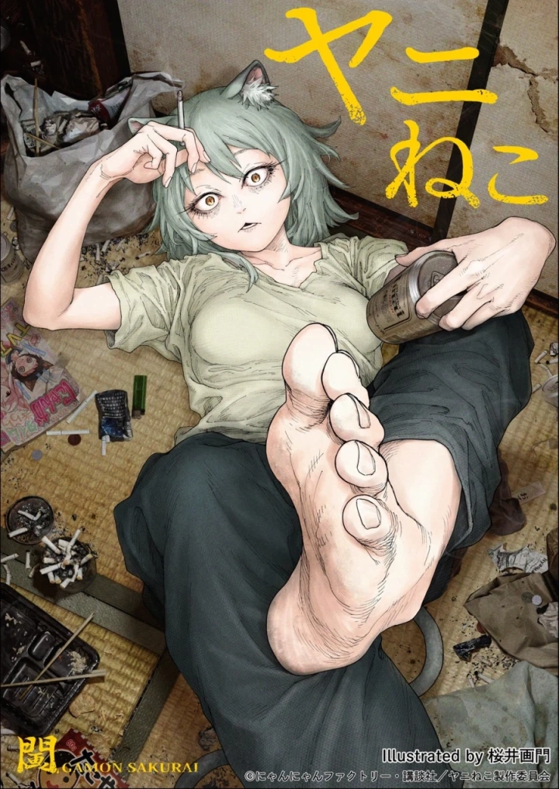
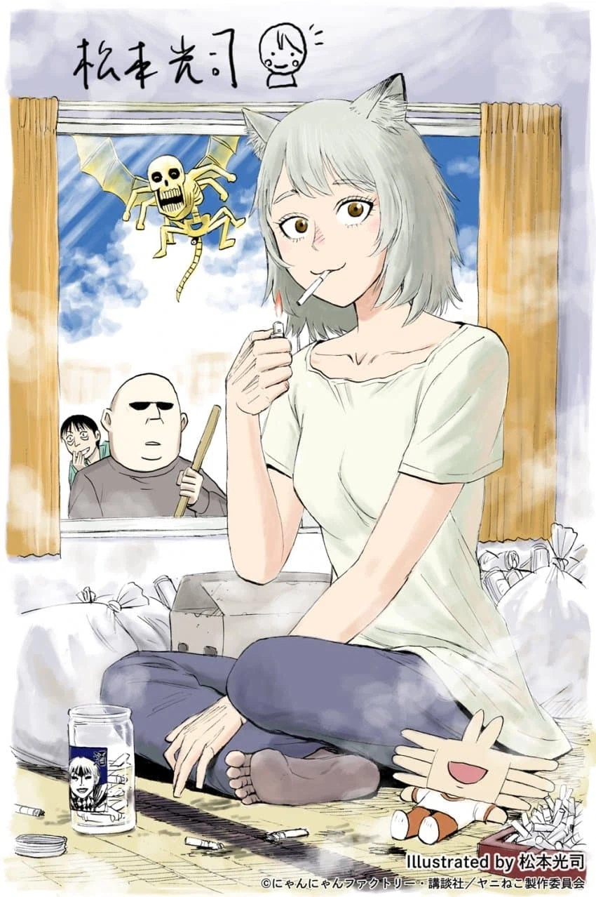

아인 작가는 공식 축전 당담.


아인 작가는 공식 축전 당담.
담배 쟤 아빠 이름이 사토라는데.. 해외출장중에 돈 많다는데 아인에서 나오던 용병하던 불사아저씨 이름이 사토에 한자까지 같다더라
그야 애초에 사토라는 이름 자체가 흔한 이름이라서.. 심지어 아인의 사토는 원래 사뮤엘 T 오언이라는 이름의 앞글자만 따서 sato라고 만든거를 그냥 그렇게 표기한거 뿐임
아인작가는 싸웠나?..
이번 분기 정말 재밌었고 2기로 꼭 다시 만나자
피안도 이새끼 그냥 안그리는거
아인 작가는 왜 갑자기 이상하게 그리는 거냐아아아아앗
술병에 미야비 ㅋㅋㅋㅋ